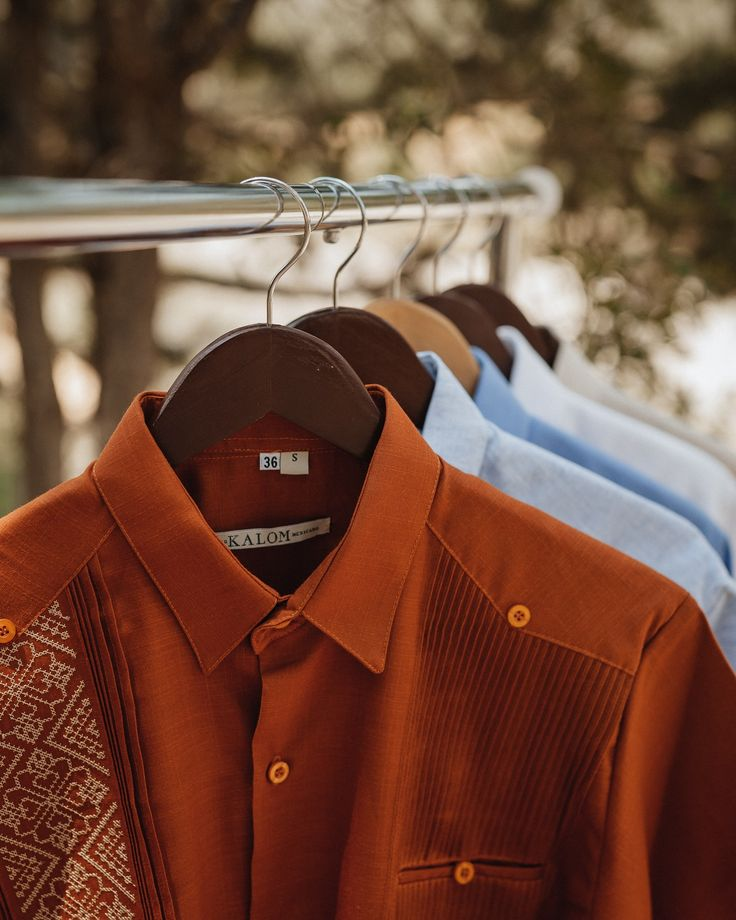
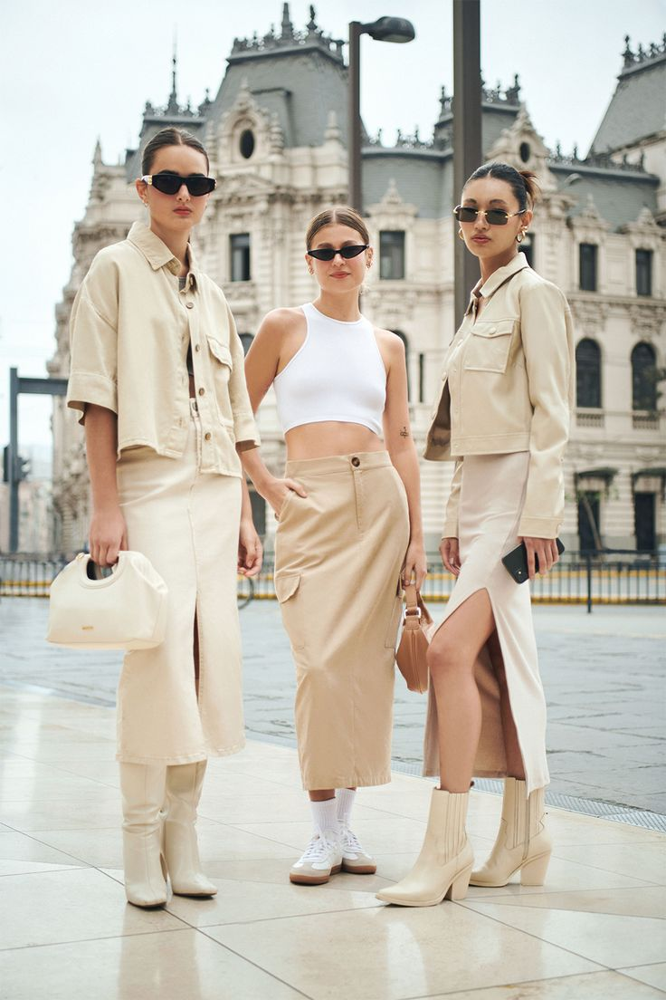
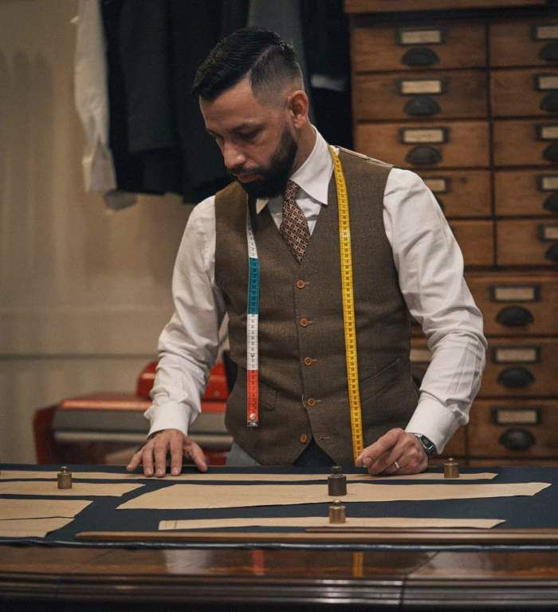
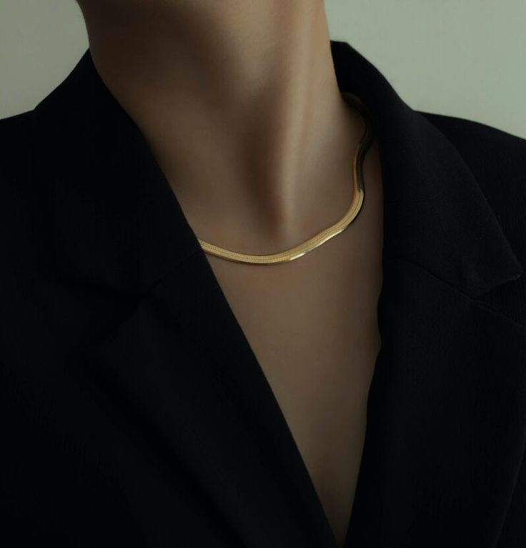
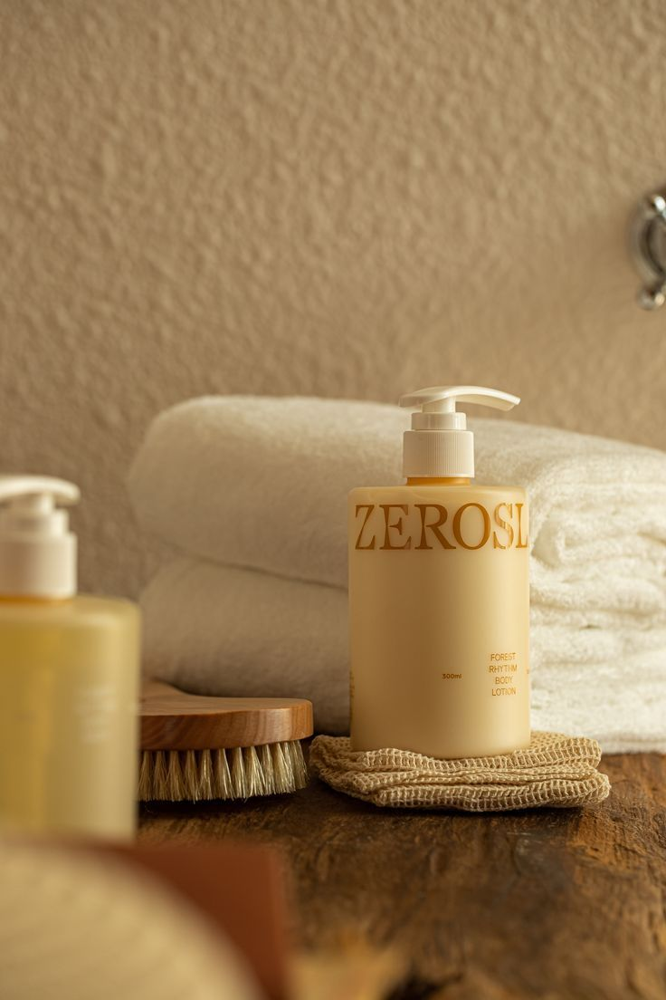

Aprende a destacar con un estilo sofisticado y atemporal
La elegancia no siempre se trata de marcas costosas, sino de calidad. Opta por telas duraderas como la lana, el algodón, la seda o el lino. Una buena prenda bien cuidada puede durar años y siempre lucir impecable.
Colores como el negro, blanco, gris, beige y azul marino son versátiles y transmiten sofisticación. Puedes combinarlos fácilmente y crear un look refinado en cualquier ocasión.
Una prenda elegante debe ajustarse correctamente a tu cuerpo. Evita lo demasiado apretado o suelto. Un buen sastre puede transformar una prenda básica en una pieza hecha a medida.
Evita los excesos. Usa pocos accesorios, pero de buena calidad. Un reloj clásico, unos zapatos bien cuidados y una prenda estructurada pueden ser suficientes para lograr un look impactante.
La elegancia también se transmite en los pequeños detalles: uñas limpias, cabello cuidado, zapatos lustrados y ropa planchada. El cuidado personal es parte esencial del estilo.
